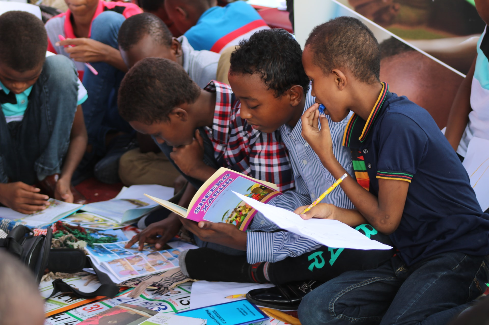

The Girls & Boys Club is a safe place to learn and grow all while having fun. It is the place where great futures are started each and every day. The Girls & Boys Club believes every child has the potential to BE GREAT. In support of this strong conviction, we strive to build caring, responsible citizens. We are a community of staff, volunteers, parents, youth and supporters working to create a positive place, full of hope and opportunity, for every local child.
In every community, girls and boys are left to find their own recreation and companionship in the streets. An increasing number of children are at home with no adult care or supervision. Young people need to know that someone cares about them. The Girls & Boys Club offers that and more. Club programs and services promote and enhance the development of girls and boys by instilling a sense of competence, usefulness, belonging and influence. Success is deeply ingrained in the history of the Girls & Boys Club. Based on independent findings from outcomes studies we continue to make a positive difference. At Girls & Boys Club were All About The Kids! Our mission is to promote healthy learning and development and to provide an environment that encourages our local children to become strong leaders in our community. We provide children a safe and exciting atmosphere that is both engaging and fun! All of our local children have the potential to become successful and productive members of our community and were here to encourage their growth and education.